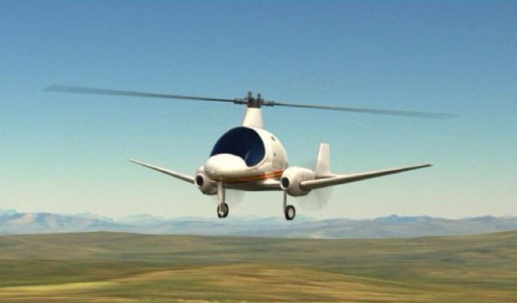

Heligir és o serà, perque encara no esta construida, la nau voladora d'enlairament i d'aterratge vertical més ràpida del món. Quan arriba a una determinada velocitat les hèlices paren de girar, i es pleguen a radera, i continua volant amb dos motors que porta a les ales laterals.
És una mica difícil d'entendre, així que, qui millor que el director general d'Helicat Heribert Soler, per que t'ho expliqui:

Funciona com un helicòpter normal, però a més de les hèlices té dos ales al costat per així, quan arribi als 150km/h, puguin plegar-se i funcionar només amb els motors de les dos ales, així s'aconsegueix anar més ràpid per que les ales no et fan parar.
A la nostra vida quotidiana, quan estigui construit ens podria aportar moltes coses, des de fer viatjes curts més ràpidament, fins a que la policia el podria fer servir per controlar les carreteres o grans zones des de l'aire.